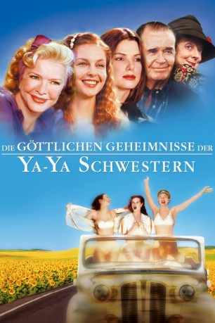

gesehen am 13.05.2016
gesehen am 13.05.2016Alternativ: Divine Secrets of the Ya-Ya Sisterhood gesehen am 13.05.2016
 
 IMDB-Wertung: 6.0 / 10
IMDB-Wertung: 6.0 / 10  Metascore:
Metascore: 
Die New Yorker Theaterautorin Sidda Lee Walker ist weit weg von ihrer Heimat Louisiana, aber eine viel größere emotionale Kluft trennt sie von ihrer exzentrischen Mutter Vivi. Weder Mutter noch Tochter sind bereit, den ersten Schritt zu tun, um den Spalt zwischen ihnen zu überbrücken. Das ist ein Auftrag für die Ya-Ya-Schwestern! Die Ya-Yas- lebenslang eingeschworene Freundinnen Vivis - versuchen in der preisgekrönten Adaption von Rebecca Wells Bestseller Mutter und Tochter mit einem unkonventionellen Plan wieder zusammen zu bringen.
Jahr: 2002
Dauer: 111 Minuten
FSK: 12
Land: USA Studio: Warner Bros. PicturesTonspuren: DD2.0 - ,
Untertitel:
Auflösung: 1080p (1920x808) Größe: 3727 MB
Genre: Drama
Regisseur: Callie Khouri
Drehbuch: Michael Brandt
Soundtrack:
Darsteller:
 Sandra Bullock als Siddalee 'Sidda' Walker
Sandra Bullock als Siddalee 'Sidda' Walker Ellen Burstyn als Viviane Joan 'Vivi' Abbott Walker
Ellen Burstyn als Viviane Joan 'Vivi' Abbott Walker Fionnula Flanagan als 'Teensy' Melissa Whitman
Fionnula Flanagan als 'Teensy' Melissa Whitman James Garner als Shepard James 'Shep' Walker
James Garner als Shepard James 'Shep' Walker Cherry Jones als Grandma 'Buggy' Abbott
Cherry Jones als Grandma 'Buggy' Abbott Ashley Judd als Younger Vivi Abbott Walker
Ashley Judd als Younger Vivi Abbott Walker Angus Macfadyen als Connor McGill
Angus Macfadyen als Connor McGill Maggie Smith als Caro Eliza Bennett
Maggie Smith als Caro Eliza Bennett David Lee Smith als Younger Shep Walker
David Lee Smith als Younger Shep Walker Gina McKee als Genevieve Whitman
Gina McKee als Genevieve Whitman Matthew Settle als Lt. Jack Whitman
Matthew Settle als Lt. Jack Whitman Fred Koehler als Pete Abbott
Fred Koehler als Pete Abbott Boyd Kestner als Adult Shep Walker, Jr.
Boyd Kestner als Adult Shep Walker, Jr. Connor Matheus als Young Boy , uncredited
Connor Matheus als Young Boy , uncreditedDatei: X:\2002\Göttlichen Geheimnisse der Ya-Ya Schwestern, Die (2002, FSK12, 1920x808).mkv seit 09.05.2016
Festplatte: HD 1996-2002
 Es gibt insgesamt 93 Filme in der Gruppe '2002'
Es gibt insgesamt 93 Filme in der Gruppe '2002'